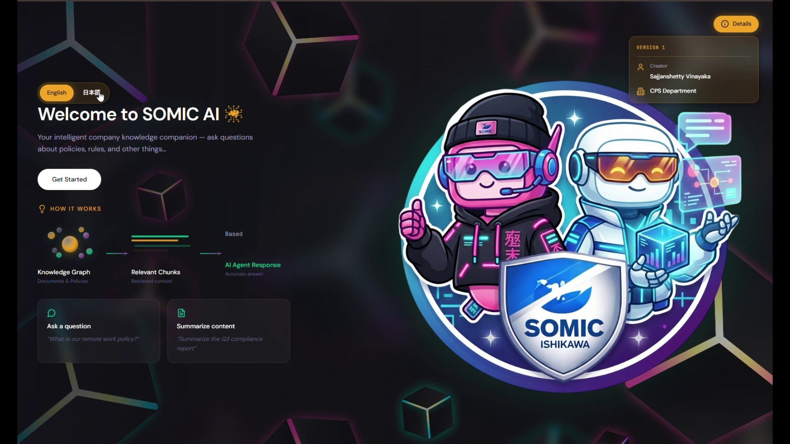
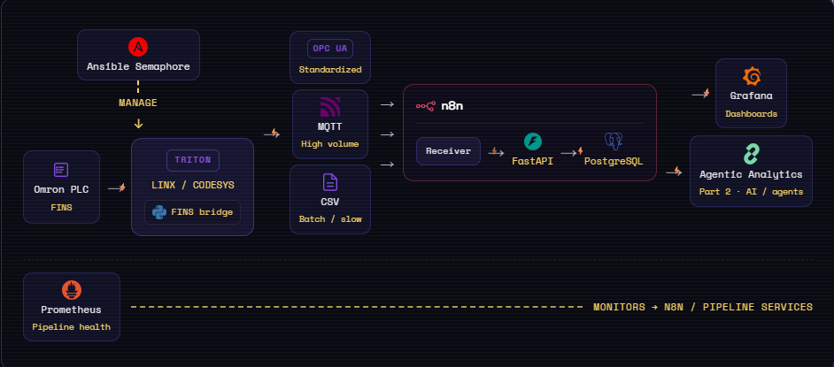

👋 Hello Curious Minds, Welcome
Vinayaka Sajjanshetty
Connecting industrial IoT to agentic AI — so live operational data becomes intelligent analysis, not just dashboards. Based in Shizuoka, Japan 🇯🇵
👋 Hello Curious Minds, Welcome
Connecting industrial IoT to agentic AI — so live operational data becomes intelligent analysis, not just dashboards. Based in Shizuoka, Japan 🇯🇵
01 — About
I'm an Applied AI Researcher based in Japan, working where industrial IoT meets agentic AI — building systems that don't just collect data, but analyze and reason over it.
My work spans LLM agents, edge data pipelines, and physical AI in manufacturing — from connected shop-floor signals to robotics prototypes tested on the factory floor. I also write on bridging IoT and intelligent agents — the space where most analytics still stops at dashboards.
Background in data analytics and an MS in Computer Science (ML & image processing). Also an NPO volunteer and part-time English instructor in Japan. Fluent in English and Hindi; learning Japanese 🇯🇵.
02 — Projects
Autonomous LangGraph state-machine running parallel AI 1:1 sessions — Planner deconstructs objectives into 3 criteria tags, Extractor tracks completion score (≥0.85 threshold), 7 guardrails including difflib repetition detection and tenacity retry, prompt-driven agent customization via standalone .txt files. Compresses 10h of manual meetings into 1h.

100% on-premises bilingual (JP↔EN) RAG for a 10-member team — MinerU layout parsing overcame 45% OCR failure, algorithmic Mean Anagram Hash-Mapping guardrails eliminated VLM hallucinations, Atlas inference on DGX Spark boosted throughput 35→80 t/s, end-to-end latency crashed from 90s down to 6-10s.
Scaled RAG into a multi-department enterprise tool — LLM-as-a-judge regression engine with HITL override eliminated false-negative eval failures. Entity-Anchored Ingestion with Hindsight Tagging bound PLC register maps directly to vector metadata, achieving 85-90% retrieval accuracy on 500-page automation manuals.

LINX TRITON IIoT edge platform with multi-path PLC ingestion (OPC UA, HTTP, MQTT, CSV) — n8n + FastAPI → PostgreSQL pipeline, Grafana dashboards, Ansible Semaphore fleet ops, and Docker containerization. Scaled to 20+ concurrent PLC connections across production lines.

Event-driven multi-agent analytics (LangGraph) on live factory PostgreSQL — Dynamic Schema Fetcher via semantic router eliminates context bloat, regex AST parser + transactional rollbacks enforce deterministic SQL security, SELECT...FOR UPDATE SKIP LOCKED resolves race conditions across concurrent agent threads.
Internal R&D for automated robotic hand in factory assembly — validated standing-work motion cycles via ROS2, RViz2, and Gazebo simulation. Identified grip torque limitations informing next-gen hardware roadmap.
Cross-border delivery: collaborated with a US startup and Japan factory teams to deploy a Wi-Fi power testing system. Resolved critical data failures and enabled real-time power analytics for operators across production lines.
Analyzed heat-induced failures in selective soldering. Built 3 POC monitoring models including a mini-camera setup to identify optimal operating windows.
Supported clinical, claims, and billing data analytics at Legato Health Technologies. Root-cause analysis, ETL pipelines, and cross-team data quality improvement.
03 — Education
05 — Contact
Open to interesting projects, collaborations, and good conversations. Based in Shizuoka, Japan — reach out anytime!